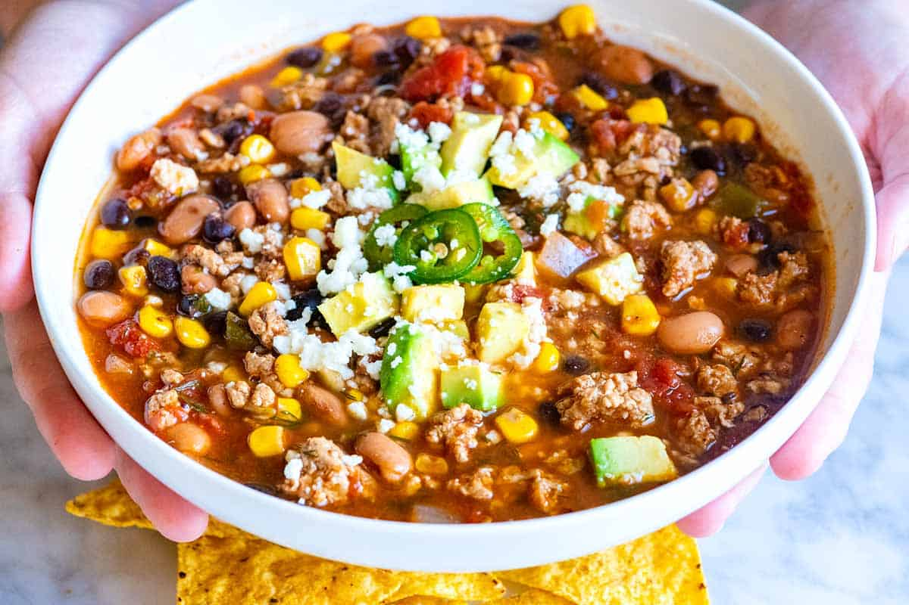

Taco Soup Recipe
We all love Tacos. So why not a healthy, tasty, and easy alternative? That is what
we are getting when you make this taco soup meal. Lets get to it and go over how we
can create this dish!
Ingredients
- 1 pound lean ground meat such as beef, turkey, chicken, or pork
- 1 teaspoon olive oil
- 1 cup chopped onion
- 2 tablespoons taco seasoning
- 3 cloves garlic, minced
- 1(28 ounce) can whole or diced tomatoes
- 1(4 ounce) can diced green chiles
- 2(15 ounce) cans of beans such as black, pinto, or kidney beans
- 1 cup frozen corn
- 3 cups beef or chicken stock
- 2 to 3 tablespoons chopped fresh dill, optional
- salt and cayenne pepper or hot sauce
Directions
- Heat the oil in a large soup pot (or Dutch oven) over medium-high heat. Add the ground meat
and cook until browned, about 5 minutes. As the meat cooks, use a wooden spoon to break the meat into crumbles
- Add the onions and cook, stirring them around the pot, until they begin to soften, about 5 minutes
- Stir in the garlic and taco seasoning and cook until fragrant, about 1 minute
- Add in the tomatoes, chiles, beans, corn, and the stock. Bring to a boil, reduce to a simmer, and cook for 15 to 20 minutes
As the soup simmers, use a wooden spoon to break apart the tomatoes. Stir in the dill
- Taste then adjust with salt and/or cayenne pepper or hot sauce. Serve with your favorite taco toppings